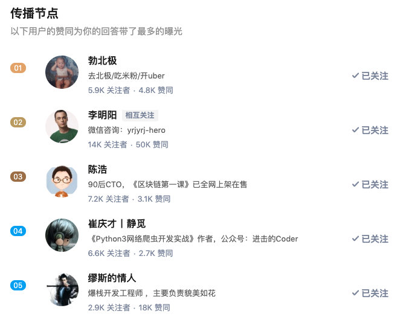
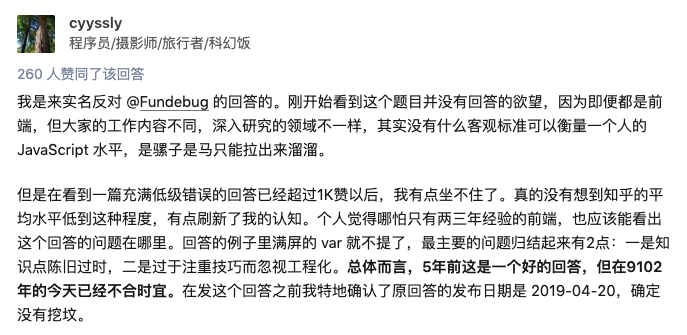

原文连接:https://www.cnblogs.com/fundebug/p/10904334.html
元旦的时候，我立了一个Flag，今年要写一篇10万+，现在目标算是完成一半了。
终于有了一篇10万+
知乎后台显示我的回答《如何衡量一个人的 JavaScript 水平？》的阅读量已经超过了10万，具体截止2019年5月20号是115172。
阅读量已经超过10万了，为什么只是完成了一半呢？因为这篇博客其实是我翻译的，原文在Web Archive上能够找到：10 JavaScript concepts every Node.js programmer must master。而且，这篇博客是我2年前写的：10个JavaScript难点。不是原创，也不是今年写的，当然只能算是完成了一半。
虽然只是翻译，但是基本上等于"重写"了一遍，因为我翻译博客都是意译而非直译，这是为了保证可读性。中文和英文的写作套路完全不一样，英语喜欢用各种定语从句，强行直译的话读起来会非常莫名其妙。感兴趣的话，不妨对照原文和我的翻译看看。
刷知乎的时候，看到了这个问题：如何衡量一个人的 JavaScript 水平？，就想起了自己2年前的博客，内容刚好合适，于是随手转发了一下。我对于这篇翻译的博客还是挺满意的，所以一直记得它，所以猜到它应该会比较受欢迎，后来发现它受欢迎的程度远远超过了我的想象。
感谢知乎的推荐算法
正如韩寒在《三重门》的后记写的：我是金子，我要闪光的。好的内容也是会闪光的，只是需要时间和机会。在各个内容平台中，知乎的推荐算法更加友好，可以将内容推荐给很多感兴趣的人，这对于每个坚持创作的人都是一个很好的机会。根据知乎提供的热门内容传播分析报告，一些大V的点赞加速我的答案的传播，在此感谢大家的支持。

作为一个内容平台，推荐算法还是非常重要的。不少用户已经养成了通过推荐获取信息的习惯，比如我每天都刷很多次微信的看一看，确实能发现不少感兴趣的内容。但是，一些内容平台的推荐功能很弱甚至于没有，这里我就不点名了。创作者发布博客之后，会发现除了前几天访问量还可以，以后就非常少了，未来的流量只能依赖于搜索引擎。这样的话，对于读者、作者以及平台都是一种损失。今日头条的成功，简单来说，其实就是推荐算法的成功。
我的博客
这几年，我一直坚持原创或者翻译博客，大概每周写一篇，现在已经写了接近17万字，阅读量超过1万的其实也不少了，但是写技术博客要想突破10万+是一件很难事情，因为中国也就那么几百万开发者。技术相对于各种热点来说，非常的枯燥，其实我也很少看，除非特别感兴趣。有时候确实感兴趣，也不过是收藏到Pocket里面，然后就没有然后了。
既然没什么人看，有时候还得被键盘侠喷，那为什么还要写呢？这个问题我也问过其他一些写技术博客的作者，因为发现他们的公众号也没什么人看，但是他们依然在坚持写作。
其实，这个问题的答案很简单，写技术博客是一种非常好的学习方式。当我们写一篇技术博客的时候，需要对某个技术点非常熟悉，有时候还需要一些自己的思考，而写作的过程中总会发现一些自己不太清楚的地方，需要进一步了解。这样，但你写完一篇博客之后，你对这个知识点已经相当熟悉了，我们的知识体系就通过一篇篇博客完善起来了。
如果大家觉得我的博客还有点意思，不妨看一下我这几篇博客，算是我自己还比较满意的：
反驳某些评论
每一个创作者应该都知道，认真地写一篇博客或者翻译一篇博客都不是一件简单的事情，一般需要花好几个小时时间。对于我来说，每一篇博客都是牺牲周末的休息时间完成的。但是，对于某些键盘侠来说，一句话就可以把人给怼得非常无语。写几十个字的评论，显然要比写一篇上千字的博客要简单很多。
我写了这么多博客，被怼了无数次也习惯了，很多时候不太想看评论。自己费劲写的博客被莫名其妙地怼了，自然影响心情。当然我还是会去看评论的，因为大部分评论是比较友善，且有所收获的，有时确实能够帮助我修改一些错误。
当朋友告诉我，有人实名反对我的10万+，这虽然是意料之中的事情，但是也非常扫兴了。

这位兄弟比较较真，甚至有点かわいい，不过我也是个较真的人，这里来反驳一下这位兄弟的观点，当然对事不对人。
他总结的观点我是完全赞同的："代码是用来解决问题的，不是用来秀技巧的，越花巧的代码维护的代价越高。如果有一百种解决问题的方法，请使用最简单的一种。"
但是，他说的东西和我的回答基本上是牛头不对马嘴，不知道他在反对我什么东西。我的回答只不过是介绍了10个JavaScript知识点，又没有说非得用这些特性去写代码，谁没事写个立即执行函数啊？
拿闭包来说，大家知道它是怎么回事，看到闭包代码的时候能够理解，需要的时候知道怎么写，面试的时候能够答出来就行了。当然，我们没有必要没事写什么闭包给自己添乱，这是不言自明的道理，不知道有啥好说的。
再举个例子，JavaScrip异步编程有3种方式：回调函数、Promise以及Async/Await，我一直在"鼓吹"大家使用Async/Await，因为简单太多了。但是，这就意味着我们不需要理解回调函数以及Promise了吗？Promise是Async/Await的基础，没有它，哪里来的什么Async/Await？至于回调函数，事件监听的时候还是得用吧？
打个比方，我写了一篇介绍汇编语言知识点的博客，如果有人说”什么年代了你还用什么汇编呢？当然得用Java啊“，这是不是有点搞笑？日常工作中，99%的开发者确实不需要用汇编，但是大部分开发者最好学习一下汇编，为什么呢？因为学会了汇编，往下层可以帮助你理解计算机组成原理，往上层可以帮助你理解编译原理。这些知识对于一个优秀的工程师都是必要的知识。
还有一点需要说明，并不是我介绍的知识点没有用，应该只是现在的你用不到而已，写上层的业务代码当然无需这些奇怪的特性。但是当你写一些稍微底层的代码，比如开发一个Fundebug前端BUG监控插件或者录屏插件时，什么立即执行函数，闭包，prototype，apply都是要用到的。
本来想逐条反驳，所谓来而不往非礼也。不过还是算了，他翻来覆去也就一句话，这个特性不能用，那个特性不能用，也没有什么好反驳的。这些特性确实有些陈旧了，大多数时候也没有必要用，但是正如评论区有人说过，这些特性"best to know"，至于用不用那是另一回事。我给大家介绍一下这些特性，没有劝大家用这些特性，兄弟犯不着这么激动。
彩蛋
我的回答最重要的是最后1个，前面的知识点可以理解为铺垫。我也是花了点时间想清楚然后再写清楚的，不妨作为面试题，正如我所说的，能够读懂最后1个，JS水平不会太差。
关于Fundebug
Fundebug专注于JavaScript、微信小程序、微信小游戏、支付宝小程序、React Native、Node.js和Java线上应用实时BUG监控。 自从2016年双十一正式上线，Fundebug累计处理了10亿+错误事件，付费客户有Google、360、金山软件、百姓网等众多品牌企业。欢迎大家免费试用！

版权声明
转载时请注明作者Fundebug以及本文地址：
https://blog.fundebug.com/2019/05/20/the-first-blog-over-100-thousand-pv/